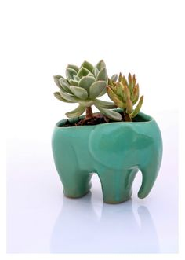

Learn some helpful tips to taking care of your succulent. Although most of them are incredibly low maintenance, some of us just have that special ability of being able to corrupt almost any living thing. This ones for you.
-
Potting

The first step if you are considering buying a a succulent is finding the correct type of pot. Although this sounds silly at first, succulents are incredibly prone to rot and if the right precautions aren't taken, rot will surely become an issue. Make sure to find a pot with a drainage hole to allow for excess water to leak out between watering.
-
Soil
Soil is also an important key. Find a soil intended for cactus/ succulents in any hardware store, or if you prefer, make your own. To make your own soil suited for cactus/ succulents, mix one half regular soil and one half sand. This is key in caring for your plant as a soil not suitable for desert plants also retains moisture for long periods of time, which is not benefitial to your plants.
-
Lighting
As succulents are native to hot climates, exposure to sun is imperative. Find a sunny windsill, or if your climate is suitable, find a place for them outdoors. Most succulents become discolored or begin to lean one way if they do not recieve enough sunlight. If you don't have enough space on your sill, perhaps look into buying a lamp designed to mimic sun rays at your local hardware store. A word of warning however, many plants that have thinner leaves are prone to burning, so make sure to watch after your plants for any signs of browning leaves, as this may be an indication. Another thing to be weary of is if you are considering placing your plants outside, to watch out for frost, as it is common in many plants. If your climate is not relatively warm and dry year round, you should consider a place indoors.
-
Watering
When to water is always one of the biggest questions when it comes to succulents, and the truth is there is never really a set timer. Remember that the biggest problem in suculent care is overwatering, so be sparse, about once in a week or two, depending on your climate and sun exposure. During the winter, more than likely, unless you are using artificial lighting, your plants will recieve less light, therefor make sure to lessen the amount of water the plants recieve.